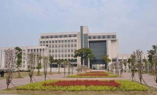
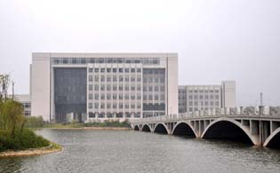
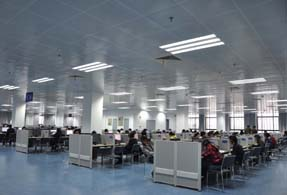
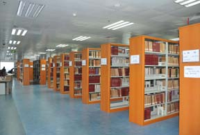

-
 本馆介绍
本馆介绍
- 作者：赵欣妍 来源：图书馆
中南大学图书馆由原中南工业大学图书馆、原湖南医科大学图书馆和原长沙铁道学院图书馆合并组成，是学校的文献信息中心。图书馆覆盖5个校区，在用馆舍面积共计约7.5万平方米，设有11个业务部门，拥有24个大型书库、31个阅览室，阅览座位5000多个。截至2017年底,全馆共有在职职工147人，其中正高职称6人，副高职称29人，中级职称72人，具有大专以上学历人员占总人数的90%以上。中南大学图书馆为教育部首批综合类科技查新单位、中国数字图书馆分馆。截至2017年底，馆藏纸质文献总量454万余册（包括图书、过刊和资料等），电子文献总量1036万余册（包括电子图书、电子期刊折合数、学位论文等），文献信息资源种类多样，内容丰富。馆藏文献重点涵盖冶金、材料、地质、采矿、土木建筑、交通运输、医学等多个学科，建立了连续性的、反映学校专业特色的藏书体系，为学校教学、科研、医疗提供全面、多样化的文献信息服务支持。
“中南大学数字图书馆”是中南大学985、211工程子项目之一，已建成了具备一定先进水平的数字图书馆平台，在行业和区域范围内起到了一定的示范作用。大力引进和推广数据库等电子文献资源，已引进CNKI、SCI、SSCI、EI、SciFinder等中外文全文和文摘数据库共250余个，馆藏各类电子资源涵盖我校全部重点学科。自建多个特色数据库，均已形成一定规模，其中《有色金属特色文献数据库》和《重点学科导航库》被列入“中国高等教育文献保障体系（CALIS）”子项目。依托中国高等教育文献保障体系（CALIS）、湖南省高校数字化图书馆、馆际互借资源共享平台等，可实现广泛的文献信息资源共享。网络布局采用集中、分布、并行相结合的管理模式，网络主干设备均配千兆光纤模块，构筑以8GB SAN架构的光纤存储网为核心的高可靠性的数字图书馆环境，采用双机集群、异地存储、容灾系统，系统物理容量超过300TB，实现信息集中发布、分散管理的格局。
-
开放时间
| 部门 | 业务部室 | 位置 | 开放时间 |
|---|---|---|---|
|
新校区流 |
借还书台/咨询台 |
读者区一楼大厅左侧 |
周一至周四：8:00-17:10 |
|
书目查询中心/自助借还中心 |
读者区一楼大厅 |
8:00——22:30 |
|
|
报刊阅览室 |
读者区二楼南 |
||
|
自然科学图书借阅室 |
读者区二、三楼 |
||
|
社会科学图书借阅室 |
读者区四、六、七楼 |
||
|
外文图书借阅区 |
读者区七楼（西北） |
||
|
电子文献阅览区 |
读者区五楼 |
-
馆舍风貌
|  |  |
| 新馆外景 | 新馆外景 |
|  |  |
| 图书馆内部 | 图书馆内部 |